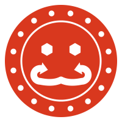
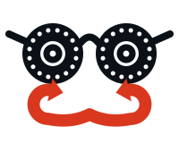
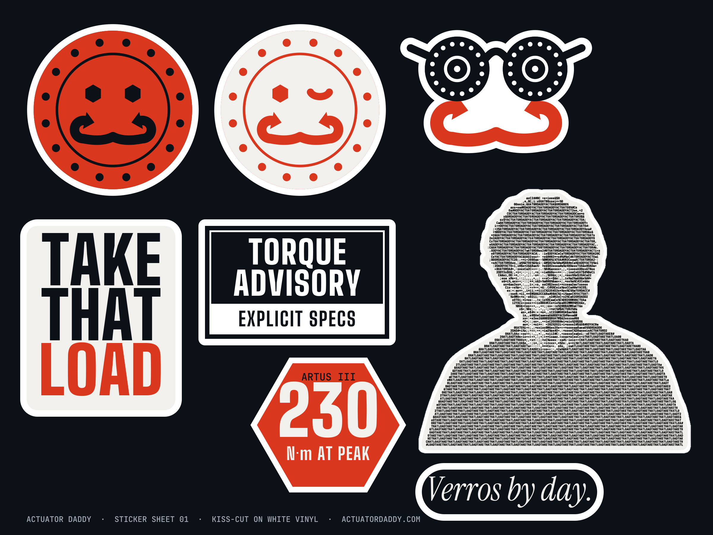
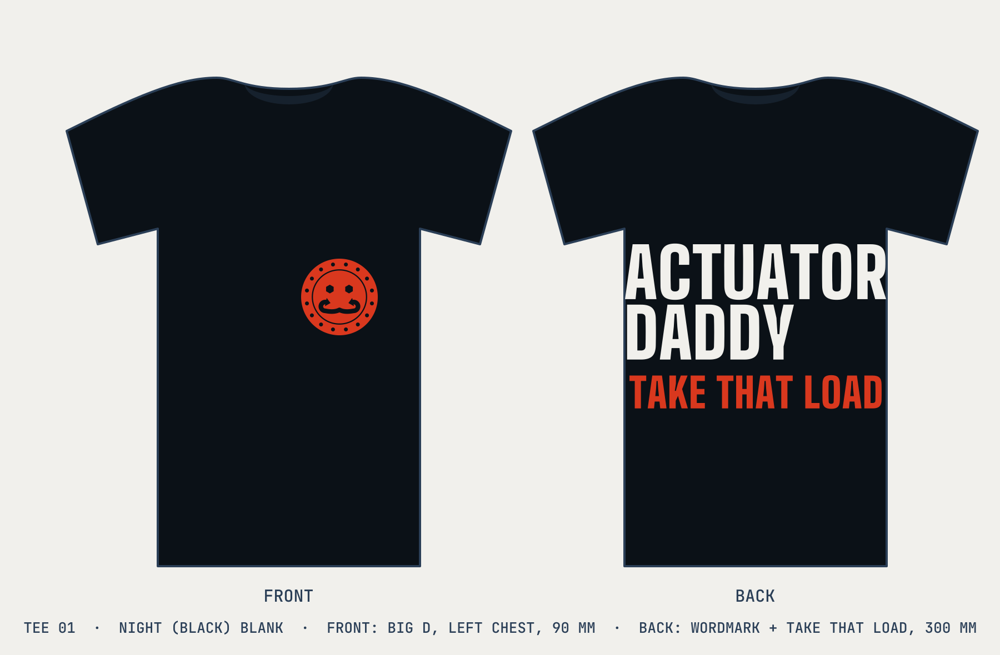

01The mark
The face of an Artus actuator is the face. Nothing on it is decorative; every feature is a part off the real unit, and the mark is called Big D.
- Sixteen rim bolts. The Artus III front plate, bolt for bolt. Count them.
- Hex socket cap screws. The eyes. He has seen your CAD.
- The output flange. The thin ring. Everything you bolt to Daddy bolts here.
- Two torque arrows, one each way. The mustache. Both directions, zero backlash.
Built with real boolean geometry: one compound path, one colour. It cuts clean on vinyl, laser and embroidery, and takes its colour from currentColor.
02Optical sizes
Sixteen bolts close up below 48 px. The small cut has eight, heavier strokes and no flange ring. Same face, fewer bolts.


Greyed out is the wrong file for that size. The favicon is the small cut in orange.
03The wink
One eye closed. The other is still a hex socket.


The wink is a reaction, not a logo. It goes on stickers, at the end of a thread, on the reply that confirms a preorder. It never replaces Big D as the primary mark, and it never appears in the lockup.
The wink reads at 64 px and above. Below that the closed eye becomes a dash and Daddy looks tired, which he is not.
04Wordmark & lockups
Big Shoulders at 900, set tight and stacked. ACTUATOR carries DADDY. Never retype it; use the file.



The mark is always orange on night and on paper. On orange it goes paper. The mark is never night on night; that is just the dark.
05Clear space & minimum size
Clear space is the bolt ring: the band between the rim and the flange, about 13% of the diameter. Nothing crosses it.
lockup.svg at its minimum width. Narrower, use the mark alone.
06Colour
Night is where it happens. Paper is what gets printed. Orange is the one loud colour, and it is rationed.
- Night#0B1117The base, about 60%. Verros steel sunk into the bay at 3 AM.
- Paper#F1F0ECType, marks and the photocopy, about 25%. Never pure white.
- Orange#D9381EEnergy only, about 10%. The mark, one word, nothing else.
- Fog#A4ADB9Secondary text and hairlines. Verros's own grey.
- Steel#2B3F57Shadows and rules on night. Never a fill for type.
Verros by day.
- Day#E6E8EBThe twin's background.
- Day ink#424C58The twin's text.
- Day primary#1F2D3DThe twin's one dark.
The day palette is Verros's, untouched. It appears in the book only when the twin does. Molten and white-hot exist as heat in the 3D site and nowhere else; they do not print.
07Type
Three faces, three jobs. Specs in the display face. Daddy's asides in the serif, italic. Mono for the ASCII and small data, never a headline.
230 N·m at peak.
300 Rated500 Peak700 Stroke900 Load
Zero backlash. Zero chill.
Rated is what he does all night. Peak is what he does when asked nicely.
ARTUS III 79 N·m RATED 230 N·m PEAK 89 RPM Ø125 × 80
ACTUATORDADDYACTUATORDADDYACTUATORDADDY
TAKETHATLOADTAKETHATLOADTAKETHATLOAD
Specimens are editable. Type a line and see whether it holds.
08Voice
Fun, and genuinely undisputed. The joke is only funny because the number is real.
- 1
Every joke is load-bearing. Each line is literally true against the spec sheet. The humour is the double meaning of real engineering words: load, torque, backlash, rod, stroke, peak, rated. Never explicit, never crude.
- 2
Deadpan. Short. Sentence case. No exclamation marks. No emoji in copy.
- 3
Specs in the display face. Daddy's asides in Instrument Serif italic. The two never swap.
Take that load.
Take that load!!!
230 N·m at peak. Ask nicely.
Unlimited torque.
Zero backlash. Zero chill.
INSANE precision, bro.
Built by hand in San Francisco.
Built different.
Dimensions are estimates. Full specs publish with preorders.
Any number that is not on verrosrobotics.com.
Verros by day.
Anything you would not say to the CFO of Amazon. He is a backer.
The spec sheet, read aloud
| Unit | Rated | Peak | Rated speed | No load | Size | Daddy says |
|---|---|---|---|---|---|---|
| Artus I | 16 N·m | 51 N·m | 158 rpm | 224 rpm | Ø80 × 60 mm | The small one. Still takes the load. |
| Artus II | 45 N·m | 113 N·m | 122 rpm | 163 rpm | Ø95 × 60 mm | Rated 45, peak 113. He paces himself. |
| Artus III | 79 N·m | 230 N·m | 89 rpm | 120 rpm | Ø125 × 80 mm | 230 N·m at peak. Ask nicely. |
Motor, zero-backlash gearbox and driver in one unit. Dimensions are estimates; full specs publish with preorders at verrosrobotics.com. In labs at MIT, Penn, CMU, Stanford, Berkeley and Illinois.
09The disguise
Two actuators as glasses and one torque mustache. The disguise is the twin persona: Verros by day, this by night. Put it on anything.


Fit rule: the lenses sit on the eyes, the bridge on the nose, and the mustache lands where a mustache lands. Scale is the distance between the pupils divided by 82; rotation follows the head. The parts ship separately as disguise-glasses.svg and disguise-stache.svg so the mustache can go on alone.
The glasses are night and the mustache is orange. On a dark photo, flip the glasses to paper and leave the mustache alone.
10The portrait
Tarun, as a photocopy. The hair is set in ACTUATORDADDY and the sweater is knit from TAKETHATLOAD. Black and white on paper, cut out, dropped on night.

- Paper on night or orange. It is a cutout; it needs something to be cut out from.
- Never recolour the ink. Black on paper is the photocopy. Orange ink is a different person.
- Never crop the hair. That is where the name is.
- 400 px tall or larger. Below that the letters stop being letters and it is a man made of noise.
- Use the shadow file on posters and the OG card. daddy-ascii-shadow.png has the drop baked in. Use daddy-ascii.png when the layout needs its own.
Tarun Malarvasan: founder of Verros Robotics, three-time ISEF grand award winner, Daddy after hours.
11Stickers
Sheet 01, kiss-cut on white vinyl. Eight stickers; the white border is the die line.

The advisory label is a parody. The specs are, in fact, explicit.
12Merch
Tee 01. A night blank. Big D on the left chest, the wordmark across the back with the line under it.

The back is for the people behind you at the robotics conference. They will read it. It is literally true.
13Downloads
Every file in the kit. SVGs are single-colour compound paths and take their colour from the file name or from currentColor.
The mark
- bigd.svgBig D, night
- bigd-paper.svgBig D, paper
- bigd-orange.svgBig D, orange
- bigd-small.svgSmall cut, night
- bigd-small-paper.svgSmall cut, paper
- bigd-small-orange.svgSmall cut, orange
- bigd-wink.svgThe wink, night
- bigd-wink-paper.svgThe wink, paper
- bigd-wink-orange.svgThe wink, orange
- favicon.svgSmall cut, orange, for the tab
- apple-touch-icon.png180 × 180, paper on orange


PNG
- bigd-orange-1024.png1024, also 512
- bigd-paper-1024.png1024, also 512
- bigd-night-1024.png1024, also 512
- bigd-wink-paper-1024.pngalso orange, night
- lockup-paper-2000.png2000 wide, also ink
- wordmark-paper-2000.png2000 wide, also ink
- disguise-1024.png1024 wide


Wordmark & lockups
- wordmark.svgStacked, paper
- wordmark-ink.svgStacked, night
- wordmark-line.svgOne line, paper
- lockup.svgOrange mark + paper wordmark
- lockup-ink.svgOrange mark + night wordmark


The disguise
- disguise.svgGlasses and mustache
- disguise-glasses.svgGlasses only, currentColor
- disguise-stache.svgMustache only, currentColor


The portrait
- daddy-ascii.png1606 × 1558, transparent
- daddy-ascii-shadow.pngSame, with the shadow baked in
Stickers & merch
- stickers.svgCut file, text outlined
- stickers.png2400 wide
- tee.svgFront and back mock